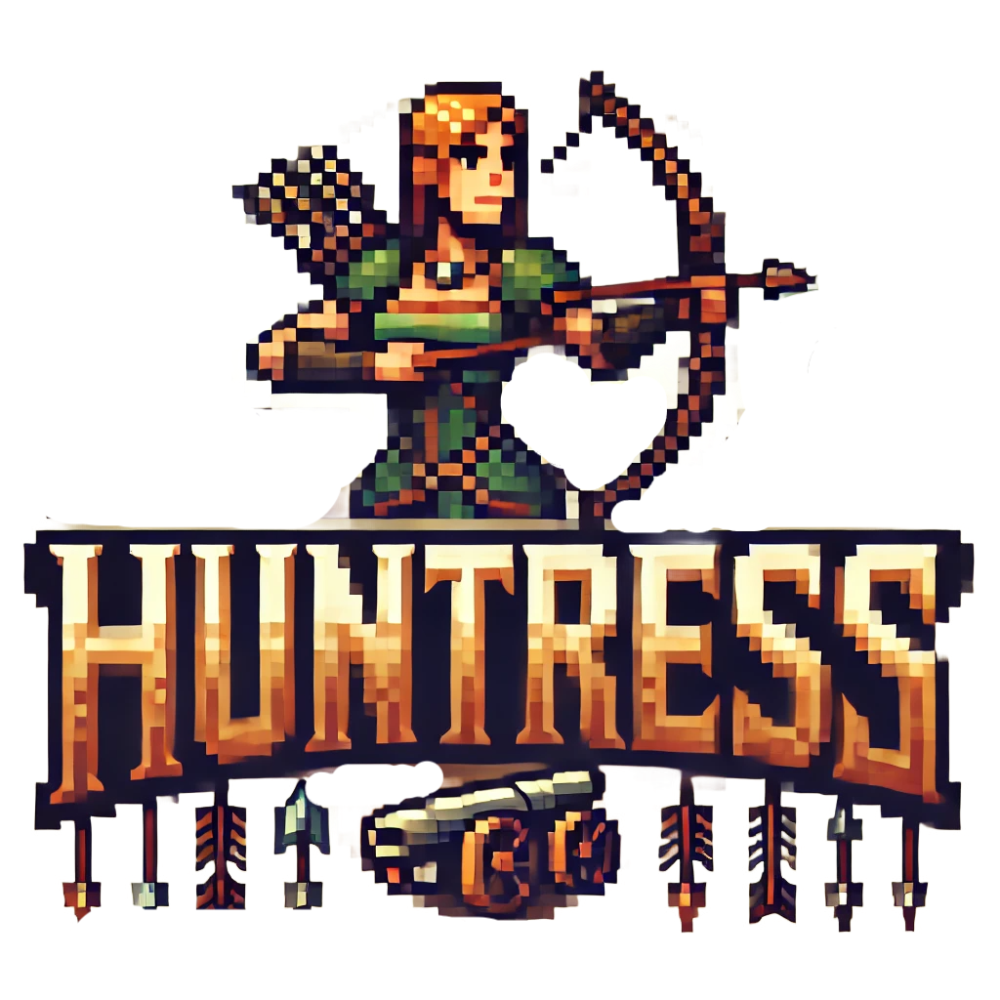
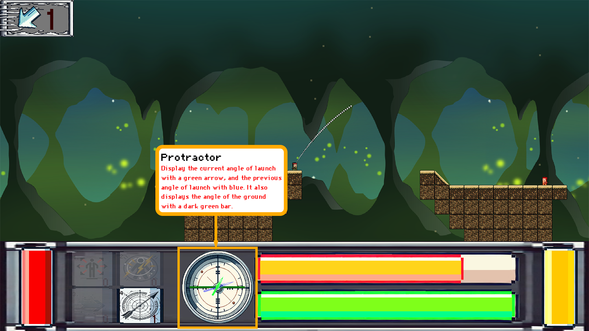
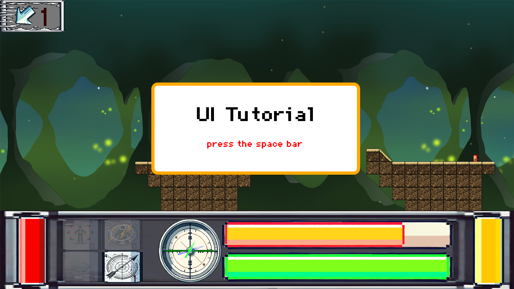
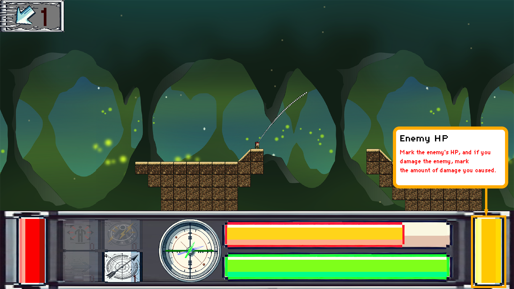
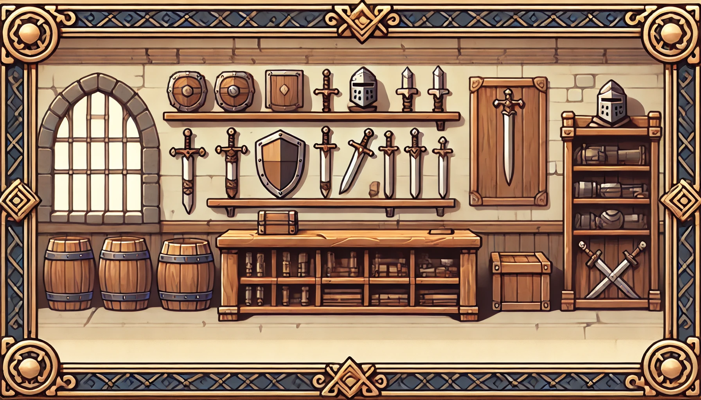

Store → prepare → aim → fire → resolve
Buy itemsEnter combatRead windSet angle & powerLaunch
C++ Team Project · Alpha Engine
UI Systems & Gameplay Integration Programmer
A 2D turn-based artillery strategy game that connects a store-and-upgrade loop to wind- and gravity-driven combat. My work centered on the interface architecture, menu and store flow, combat HUD, button interactions, item tooltips, and the handoff between UI input and combat state.

Runtime evidenceRecorded gameplay demo of the integrated combat and interface loop.
01 · Project Overview
The project alternates between purchasing upgrades and resolving turn-based projectile combat. The interface has to stay synchronized with inventory, player statistics, combat state, camera input, and render order.
Menu, store, combat HUD, escape/control overlays, buttons, hover behavior, tooltips, and item-selection integration.
UI and gameplay run inside one update loop, so state gating, input arbitration, render phases, and object lifetime must be explicit.

This repository asset documents the integrated HUD layout: item slots, current and previous angle, movement and power gauges, and both health bars.
02 · Role & Contribution
The public HaXX0rBunny author history and current main blame at f64cd0f connect the stated UI responsibilities to concrete files and commits.
ButtonComp callbacks to store purchases and combat item selection.main.Source history connects these files to the implementation cases and authored diffs below.
03 · Architecture & Technical Challenges
The interface participates in the engine update, converts cursor actions into domain events, observes combat data, and renders after the world while preserving text feedback.
UIComponent moved into an interface-specific component manager so world graphics, interface sprites, and subtitles update in an explicit order.
Button hit testing converts cursor positions into screen-space interactions while combat code rejects clicks inside the HUD region.
UI callbacks write intent into combat state instead of independently consuming gameplay data, keeping inventory, effects, and HUD feedback in one path.
Item-information objects need an explicit create/use/destroy interval because their visual objects outlive a single hover callback but not the UI module.
AlphaEngine/GSM/GameStateManager.cpp
currentLevel->Update();
ComponentManager<GraphicComponent>::GetInstance().Update();
ComponentManager<InterfaceComponent>::GetInstance().Update();
SubtitleComp::Update();04 · Troubleshooting
Each case connects the preserved parent/fix code, authored commit, and resulting control flow as a Git-backed code Before/After.
Render order
3a05019
World graphics and interface sprites could not be ordered independently; successive commits explicitly record “Modify/Fix UI Draw sequence.”
UIComponent followed the same graphics-manager path, while the frame only exposed world graphics followed by subtitles.
Introduced InterfaceComponent, moved UI/button behavior onto that layer, and added an interface-manager update between graphics and subtitles.
The preserved parent/fix code defines a deterministic world → interface → text order and documents the final presentation sequence.
fffb2b1currentLevel->Update();
ComponentManager<GraphicComponent>::GetInstance().Update();
SubtitleComp::Update();3a05019currentLevel->Update();
ComponentManager<GraphicComponent>::GetInstance().Update();
ComponentManager<InterfaceComponent>::GetInstance().Update();
SubtitleComp::Update();Button hit testing
3f82bc6
A button changed to alpha 0.7 on hover, then failed its own click test even though it remained visible.
The hit test treated every alpha other than exactly 1.0 as disabled, conflating hidden, disabled, and hover-feedback states.
Reject only fully transparent UI elements, then evaluate the normal rectangle bounds.
Hovered buttons remain clickable while alpha-zero controls stay outside the interaction path.
if (uiComp &&
uiComp->GetAlpha() != 1)
{
return false;
}if (uiComp &&
uiComp->GetAlpha() == 0)
{
return false;
}Input arbitration
c21bd73
Clicking a lower-screen item or HUD control could also toggle the left-click aiming path in CombatComp.
UI and world input both consumed the same left-button trigger without a screen-region boundary.
Guard the aiming transition with the cursor Y boundary before reading the trigger.
HUD clicks below the boundary no longer enter the world-aim transition path.
if (isDrawDirection)
{
if (AEInputCheckTriggered(AEVK_LBUTTON))
ToggleAimState();
}if (isDrawDirection)
{
if (GetMouseCursorPositionY() > -250 &&
AEInputCheckTriggered(AEVK_LBUTTON))
ToggleAimState();
}HUD data binding
4d687a4
The enemy bar displayed the wrong normalized height and anchor when player and enemy maximum health differed.
Enemy current HP was divided by playerData->maxLife in both scale and position expressions.
Bind the gauge ratio to enemyData->maxLife and reuse that ratio for size and anchor.
The enemy gauge now represents the enemy's own health domain rather than a player-relative value.
float ratio =
float(enemyData->hp) /
playerData->maxLife;float ratio =
float(enemyData->hp) /
enemyData->maxLife;
enemyHpComp->SetScale({80, 200 * ratio});State-dependent lifetime
5dc4717
The commit records an exception-handling fix: wind, angle, and gauge updates ran while the game could be in a store or transition state.
State-dependent player, enemy, and directionArrow components were dereferenced without a combat-state gate.
Move the core combat-only HUD update into state == COMBAT.
The combat-state gate prevents store and transition frames from dereferencing combat-only player, enemy, and direction-arrow components.
float angle = directionArrow
->GetComponent<CombatComp>()
->data.windAngle;
UpdateCombatGauges();if (CombatComp::state ==
CombatComp::STATE::COMBAT)
{
UpdateWindAndCombatGauges();
}Tooltip lifetime
95d8772
The previous revision initialized four tooltip pointers to null and immediately invoked CreateItemInfo() through them.
The tooltip feature added use sites without a matching allocation and destruction interval.
Allocate all four objects before setup and delete them in ExitCombatUI().
The combat tooltip array now has an explicit create/use/destroy lifetime pair.
8713369ItemInfo* iteminfo[4] = { nullptr };
iteminfo[0]->CreateItemInfo(
"OrbitUI", "Assets/UI/OrbitInfo.png");95d8772for (int i = 0; i < 4; ++i)
iteminfo[i] = new ItemInfo();
// ExitCombatUI
for (int i = 0; i < 4; ++i)
delete iteminfo[i];05 · Visual & Source Evidence
Source, commit hashes, tracked tutorial frames, and the gameplay video connect implementation history to the integrated result.



main share f64cd0f.main.sanghyeon branch is preserved on the user fork.StoreUI::CreateStoreItem() captures a local StoreItem by reference before vector storage. The next refactor will store the item first and capture a stable index or value.
Build the parent and fix commits in isolated worktrees, use the same save/level and 1600×900 viewport, and capture hovered skill click, HUD-vs-aim input, unequal player/enemy max HP, and CombatUI tooltip initialization.